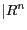

| [ < ] | [ > ] | [ << ] | [ Up ] | [ >> ] | [Top] | [Contents] | [Index] | [ ? ] |
Chapter summary:
Probability is the only calculus of uncertainty.
vpdfl contains several classes for representing and using multivariate probability density functions (PDFs).
Each PDF comes as a builder-model-sampler triplet of objects.
e.g. The abstract PDF base classes
The multivariate Gaussian PDF classes
The builders are used to compute the model data (eg the means, variances etc) for the models. The models are used to calculate densities, cumulative probabilities, gradients, etc. Samplers are used to generate samples from a given model. The samples are produced with a PDF given by its model.
| [ < ] | [ > ] | [ << ] | [ Up ] | [ >> ] | [Top] | [Contents] | [Index] | [ ? ] |
This code is an example of the strategy pattern (Gamma, et al. Design Patterns, Addison Wesley, 1995.) It is possible to write code that builds and uses a PDF, where your code does not itself know what sort of PDF is being used. Both builders and PDFs can be saved and loaded by base class pointer.
| [ < ] | [ > ] | [ << ] | [ Up ] | [ >> ] | [Top] | [Contents] | [Index] | [ ? ] |
This is the base class for Multi-Variate PDF classes. It also records the mean and variance in each dimension. Derived classes may record more information (eg covariance matrix etc). For cases where the distributions of parameters are multi-modal, the number and centres of each peak can be recorded. This is particularly useful for non-linear and mixture model representations of the parameter distributions.
The PDFs are assumed to be continuous, and defined over an  vector space.
The type of these vectors is vnl_vector<double>.
vpdfl_pdf_sampler* sampler()Create appropriate sampler class on heap and return pointer
int n_dims() constDimensionality of vector space represented
const vnl_vector<double>& mean() constMean vector for distribution
const vnl_vector<double>& variance()Vector giving variance along each dimension
int n_peaks() constNumber of peaks of distribution (1 unless multimodal)
const vnl_vector<double>& peak(int i) constPosition of the i'th peak (useful for multi-modal PDFs)
double log_p(x)Log of probability density at x
double operator(x)Probability density at x.
void gradient(g, x, p)Gradient of PDF at x
double log_prob_thresh(pass_proportion)Compute threshold for PDF to pass a given proportion
void nearest_plausible(x; log_p_min)Compute nearest point to x which has a log density above a threshold
| [ < ] | [ > ] | [ << ] | [ Up ] | [ >> ] | [Top] | [Contents] | [Index] | [ ? ] |
A base class for objects which build Multivariate PDF models from sets
of vectors supplied in a mbl_data_wrapper<vnl_vector<double> > derived iterator.
vpdfl_pdf_base* new_model()Create a new model of appropriate type on heap and return pointer
void build(model, data)Build the model from the vectors supplied in data
void weighted_build(model, data, weights)Build the model from the supplied vectors, allowing for given weights
| [ < ] | [ > ] | [ << ] | [ Up ] | [ >> ] | [Top] | [Contents] | [Index] | [ ? ] |
This generates samples drawn from the distribution described by a vpdfl_pdf_base.
Note that unlike other types in the library, the samplers don't contain useful
state, and cannot be saved.
const vpdfl_pdf_base& model() constThe vpdfl_pdf_base for which this is a sampler
void set_model(pdf)Set model for which this is a sampler
void sample(x)Draw random sample from distribution
| [ < ] | [ > ] | [ << ] | [ Up ] | [ >> ] | [Top] | [Contents] | [Index] | [ ? ] |
vpdfl_axis_gaussianGaussian PDF aligned with the cartesian axes.
vpdfl_gaussianGeneral gaussian at arbitrary orientation. Axes are
defined by a set of eigenvectors, eigenvecs(), and their associated eigenvalues,
eigenvals() of the covariance matrix of the original data.
vpdfl_pc_gaussianA gaussian at arbitrary orientation. The covariance in the direction of the smaller eigenvalues are assumed for efficiency to be circular.
vpdfl_mixture_pdfMixture model containing two or more components (each a vpdfl_pdf_base derived class)
| [ < ] | [ > ] | [ << ] | [ Up ] | [ >> ] | [Top] | [Contents] | [Index] | [ ? ] |
Suppose we wish to compute a multivariate gaussian from a set of vectors, then estimate the probability that each vector was generated by the distribution.
vcl_vector<vnl_vector<double> > data(n);
// Load in the vectors
....
// Create an iterator object to pass the data in
mbl_data_wrapper<vnl_vector<double> > v_data(data);
// Define what type of builder to use. In this case we want a Gaussian
vpdfl_gaussian_builder builder;
// Generate model to build
vpdfl_pdf_base *model = builder.new_model();
// I could have created it directly using
// vpdfl_gaussian model;
// Build the model from the data
builder.build(*model, v_data);
vsl_print_summary(vcl_cout, model);
// Now test each vector
for (int i=0;i<data.size();++i)
vcl_cout<<"log(P(v(i))) = "<<model->log_p(data[i])<< vcl_endl;
// Tidy up
delete model;
|
To generate a collection of 4d Normally distributed samples.
// Create PDF
vpdfl_axis_gaussian model;
vnl_vector mean(4, 0.0), var(4, 1.0);
model.set(mean, var);
// Create a sampler.
vpdfl_sampler_base *sampler = model.new_sampler();
// Somewhere to store the data
vcl_vector<vnl_vector<double> > data(n);
// Generate 100 samples.
for (unsigned i =0; i < n; ++i)
sampler->sample(data[i]);
// Tidy-up
delete sampler;
|
It is straightforward to merge the above examples, demonstrating how to use a PDF and sampler to generate some data, and then building a new PDF from that data. This is exactly what the test programs do.
| [ < ] | [ > ] | [ << ] | [ Up ] | [ >> ] | [Top] | [Contents] | [Index] | [ ? ] |
| [ < ] | [ > ] | [ << ] | [ Up ] | [ >> ] | [Top] | [Contents] | [Index] | [ ? ] |
There is nothing fundamental in the design that means that a PDF has to be defined over a real vector space. It should be possible to template the base classes, so that the basic design could be used for discrete distributions or for continuous univariate distributions.
| [ << ] | [ >> ] | [Top] | [Contents] | [Index] | [ ? ] |
This document was generated on May, 1 2013 using texi2html 1.76.